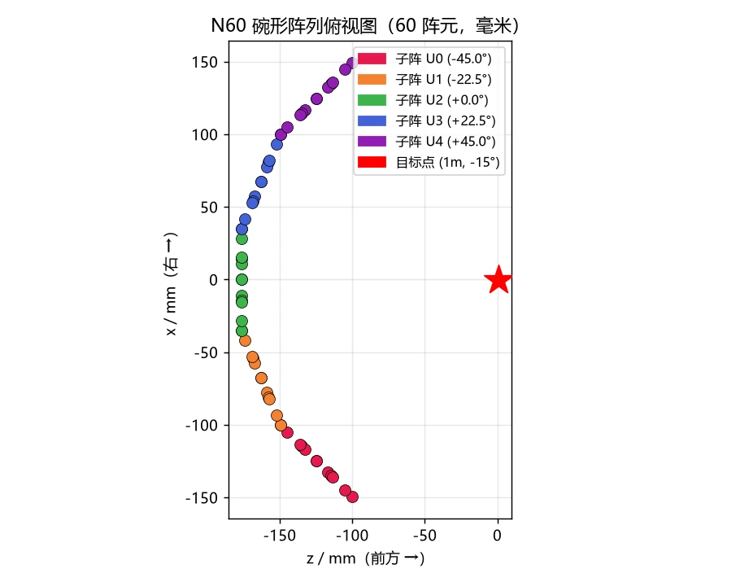

ENGINEERING RECORD
/
05
Beamforming
N60 Array.
五组阵元的定向传声原型
上位机把目标方向与距离转换为阵元参数，FPGA 用 60 路 PWM 驱动五个子阵。
信号赛道第一名2026 · 利利普杯
FIG. 05A
阵列与控制硬件

01
/
READING NOTES
一个目标方向如何变成 60 路输出？
-
从几何得到相位
上位机根据阵元与目标点之间的路径差计算相对相位，并得到各阵元的幅度权重。
-
下发各通道参数
在线计算或离线查表均由上位机完成；相位、幅度经串口送至 FPGA。
-
在板上合成驱动
FPGA 把音频与各通道的相位、幅度结合，PWM 输出接外部驱动级。
02
/
REFERENCE
原型参数
阵元数量、信号通道数和载波频率描述的是不同层级，不能当作声场性能指标。
| 环节 | 数量或频率 | 对应对象 |
|---|---|---|
| 阵列 | 5 组 | 每组 12 阵元 |
| 板端输出 | 60 路 | 逐通道 PWM |
| 载波 | 40 kHz | 超声驱动 |
03
/
ORIGINAL MATERIAL
原始材料
FIG. 05B
阵元分布

